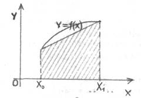
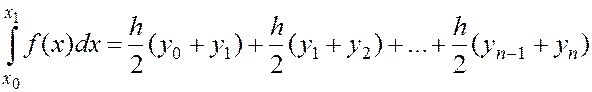
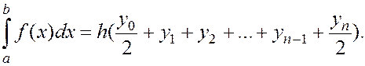
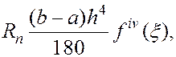

Формула трапецій.
Замінимо тепер підінтегральну функцію f(x) на проміжку інтегрування інтерполяційним поліномом Лагранжа першого степеня (тобто лінійною функцією). Це геометрично означає, що ми замінюємо площу криволінійної фігури площею трапеції (див. мал.3). Поклавши n=1, в формулі (4) (i=0,1) приходимо до рівностей :

Тоді, згідно з формулою (5)
Формула (7) є основою одного із способів обчислення визначених інтегралів, який називається формулою трапецій. Виконаємо розбиття проміжку інтегрування на n частин точками [Xi;Xi+1] (i=0,1,…,n) застосуємо формулу (7).
Позначимо через (i=0,1,…,n) Отримаємо:

або
 (8)
Остання формула називається загальною формулою трапецій.
Оцінка залишкового члена формули Сімпсона задається формулою (виведення див., наприклад, в [9])

або
Як випливає із оцінки залишкового члена, формула Сімпсона буде точною для поліномів до третього степеня включно (тому що цих випадків похідна четвертого порядку дорівнює нулю). Формула Сімпсона має вищу точність порівняно із формулою трапецій. Це означає, що для досягнення тієї ж точності, що і під час обчислень за формулою трапецій, при використанні цієї формули можна брати меншу кількість точок розбиття. Остання обставина дуже важлива при проведенні обчислень, оскільки основний час обрахунків затрачується на знаходження значень функцій у вузлах інтерполяції.